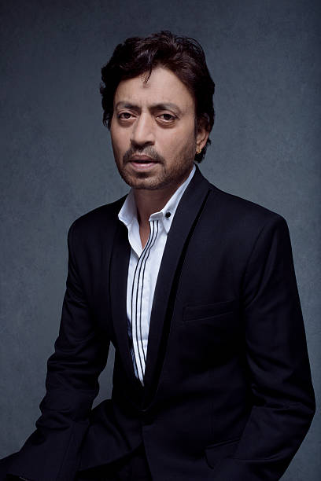

“Failure is there to teach you something so that you can go beyond that.”

Biography
Irrfan Khan (born Sahabzade Irfan Ali Khan) 7 January 1967 _
29 April 2020),also known simply as Irrfan, was an Indian actor who worked in Indian cinema as well
as British and American films. Widely regarded as one of the finest actors in Indian cinema,
Khan's career spanned over 30 years and earned him numerous accolades, including a National Film Award,
an Asian Film Award, and six Filmfare Awards. In 2011, he was awarded the Padma Shri, India's fourth
highest civilian honour.In 2021, he was posthumously awarded the Filmfare Lifetime Achievement
Award.
Khan made his film debut with a small role in Salaam Bombay! (1988), which was followed by years of
struggle. He acted in a few Film and Television Institute of India student films such as Reconnaissance
(1990), which was directed by Sandeep Chattopadhyay.